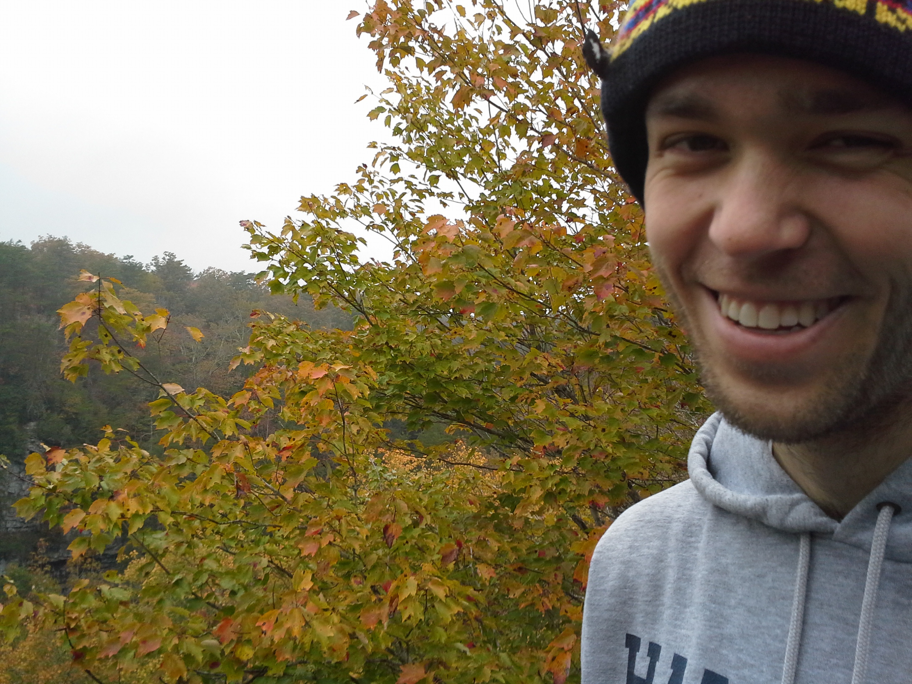

Peter B. Denton

CV: |
html
|
pdf
| Publication List: |
html
|
pdf
|
Talks
Code: |
Nu-Pert
|
ANA
|
Nu-Pert-Compare
| External: |
INSPIRE
|
arXiv
|
ORCID
|
APS
|
NBIA
|
ResearchGate
|
Google
| |
Data
|
Figures
|
Pictures
|
Press
|
Recent events
March 29:
Paper on new neutrino interactions, inflation, and IceCube published in PRD
March 5:
Neutrino oscillation probability comparisons published in PLB
February 19:
New paper on the CP-violating term for neutrino oscillations in matter
February 13:
Invited seminar at Virginia Tech
Upcoming events
March 11-May 3: At PSU to work with Irina Mocioiu via the
Neutrino Theory Network
April 12-13:
BSM at Neutrino Experiments Workshop at Arlington TX
April 24: Invited seminar at PSU
May 6-8:
Pheno at Pitt
May 20:
Seminar at Caltech
May 22:
Invited seminar at UC Irvine
May 29-31: NSI Workshop at Wash U
June 6-September 6: At Fermilab's
Neutrino Physics Center Fellowship Program
July 29-August 2:
DPF at Northeastern
August 14:
TomFest at Vanderbilt
September 25-27: Brookhaven Forum
{kind=link}